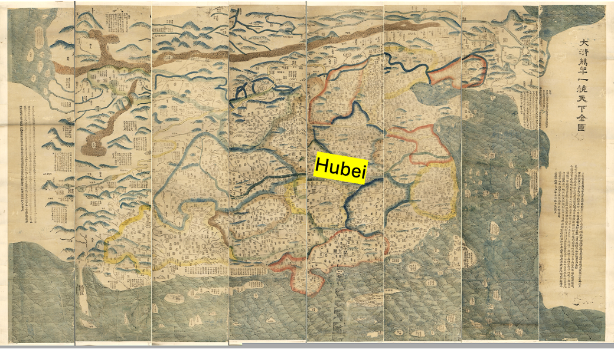

I am a historian of law and medicine in early modern China. With a focus on the legitimacy of knowledge, my research demonstrates how medical knowledge and practice were applied to clarify uncertain questions of illness—particularly madness—within judicial settings.
My first book manuscript argues that the medico-legal interface, revolving around an emerging legal category of madness, was central to adjudicating madness from the late seventeenth to the early twentieth century. Drawing on more than 2,000 criminal cases in the First Historical Archives of China, alongside medical texts, government reports, administrative handbooks, and newspapers, I analyze how medico-legal interactions—before and after the arrival of Western medicine and psychiatry—shaped the adjudication of murder cases where defendants claimed innocence on grounds of madness.